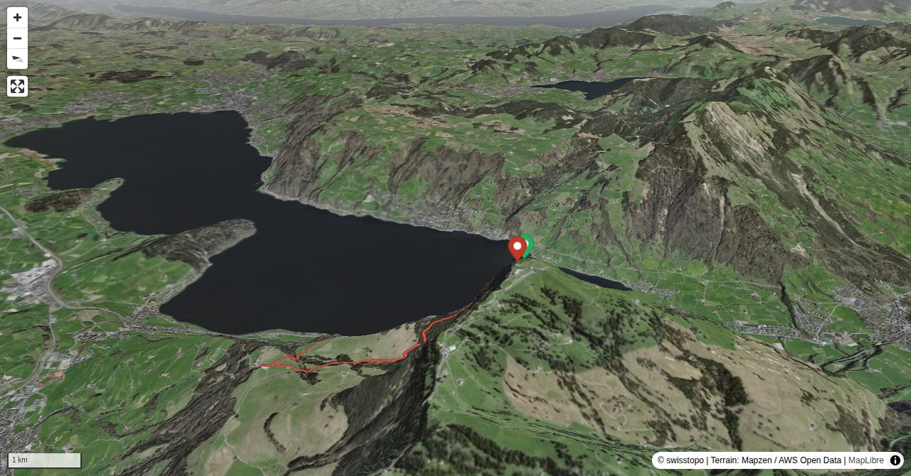

In a description from 1479 the deacon of the Einsiedeln monastery called Rigi «mons regina». In later texts Rigena, Riginun or Rigam are mentioned. They are all derived from «Riga», Latin for „line“, „trait“, „rock belt“, or „fold“. Scientists of today see the origin of the name Rigi in the „Rigenen“, those clearly distinguishable rock belts on the north and west sides of Rigi Kulm. Rigi is undisputedly an attractive mountain for alpine hiking. Proof are the ascent and especially the descent, which are far away from the daily hubbub of mass tourism.
The descent is somewhat easier (T4). On the stretch Buechzingelflue - Grässelen - Ober Stockbann the faint path on the Rigi north-east face is occasionally fairly overgrown, which requires orientational skill and surefootedness. Moreover, the trail has steep, rocky passages. Iron rungs and ladders help to overcome these obstacles.
Quick Facts
| Summit elevation | 1797 m |
|---|---|
| Difficulty | SAC T5- Check the route notes below for terrain and commitment level. Guide |
| Trailhead | Seebodenalp, Bergstation |
| Distance | 10.0 km (loop) |
| Total ascent | ~975 m |
| Elevation range | 1015-1797 m |
| Route sources | SAC Route Portal |
Photos


All photos: SAC Route Portal
Interactive Route Map
Map tiles: © swisstopo (CC BY 3.0) | © OpenStreetMap contributors | Map library: Leaflet. Route line is approximate — verify against the SAC Route Portal before going.
3D Terrain View

Tiles: © swisstopo (SWISSIMAGE) + AWS Terrain Tiles. Powered by MapLibre GL JS. Open fullscreen ↗
Route Details
Seebodenalp - "Arschbaggen" - Rigi Kulm - Leiterliweg – Seebodenalp
- Seebodenalp – Rigi Kulm 2 h 15 min. Rigi Kulm – Seebodenalp 2 h 30 min.
Terrain & safety
On the ascent there are various ledges made of a conglomerate rock called nagelfluh, which are equipped with good fixed ropes. The start of the first ledge, the highest and most challenging, is often wet. It goes 15 metres straight up and is fairly exposed. The other ledges are much easier. The descent is somewhat easier (T4). On the stretch Buechzingelflue - Grässelen - Ober Stockbann the faint path on the Rigi north-east face is occasionally fairly overgrown, which requires orientational skill and surefootedness. Moreover, the trail has steep, rocky passages. Iron rungs and ladders help to overcome these obstacles.
Source: SAC Route Portal
Getting There & Back
Start: Seebodenalp, Bergstation (1791 m)
Directions from to Seebodenalp, Bergstation
Route returns to Seebodenalp, Bergstation.
Cable car to Seebodenalp, Bergstation.
Weather Planning
7-day summit forecast (live)
Loading forecast…
Elevation Profile
Computed from the inlined GPX track (elevations from SwissTopo height API).